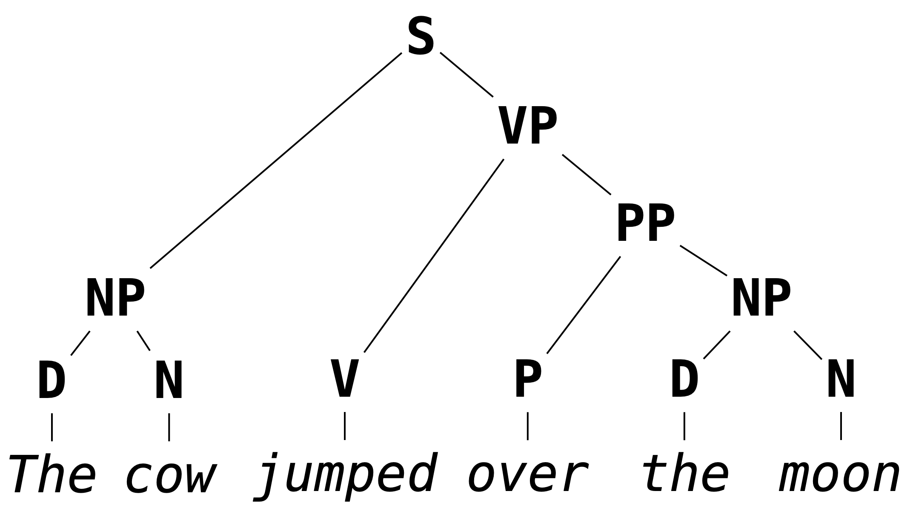
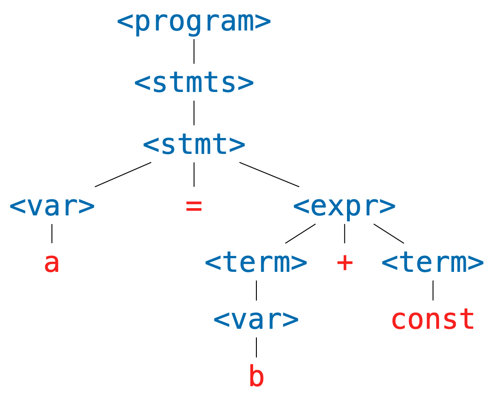

Backus-Naur Form
Backus-Naur Form (BNF) specifications are used to describe what are called context-free grammars. Context-free grammars form a class of formal grammars which are sufficiently expressive to capture the grammars of most programming languages. We will be using BNF specifications to describe the rules which determine well-formed programs in programming languages we aim to interpret.
First, a toy example/thought experiment. Consider again the following English statement.
the cow jumped over the moon
Suppose we tried to break down the cognitive process of determining that this sentence is grammatical. We might first recognize that each word falls into a particular part of speech. We can represent this step of the process by replacing each word in the sentence with a symbol standing for each figure of speech (the choice of symbol being influenced by what is to come).
<article> <noun> <verb> <prep> <article> <noun>
We then might recognize some familiar patterns: <article> <noun> captures the determination or quantification of an object, so we might mentally group these symbols (into what grammaticists call nominal phrases or noun phrases) and represent them by a new symbol:
<noun-phrase> <verb> <prep> <noun-phrase>
Then we might recognize that a preposition followed by a noun phrase is also single unit ("over the moon", "through the woods", and "behind the wall" are examples of prepositional phrases) so that the structure of the entire sentence may be represented as
<noun-phrase> <verb> <prep-phrase>
Then we might recognize that prepositional phrases can modify verbs, again creating a single unit (e.g., "ran to the car", "arose from bed") leaving us with something like
<noun-phrase> <verb-phrase>
which we should finally recognize the canonical structure of a well-formed sentence: a thing does a thing. A bit hand-wavy, but hopefully we can see that this accounts roughly for what we do when we judge that the above sentence is grammatical.
Putting these steps in reverse order (and starting with a single symbol <sentence>, for reasons we will see below) we get something that looks like a proof or evidence that the cow jumped over the moon is a grammatical sentence.
<sentence>
<noun phrase> <verb phrase>
<noun phrase> <verb> <prep phrase>
<noun phrase> <verb> <prep> <noun phrase>
<article> <noun> <verb> <prep> <article> <noun>
the cow jumped over the moon
That is, a representation of our congnitive process. And if we squint, we can see something that hiearchical, something that looks a bit like the parse tree in the introduction to this chapter.

A formal grammar is meant to model this cognitive process of classifying a sentence as grammatical by verifying that it has the "right" hierarchical structure.
Definitions
In defining a formal grammar, we have to fix ourselves to a collection of symbols.
These symbols are divided into two disjoint groups: the terminal symbols and the non-terminal symbols.
In what follows (and as above) we will always notate a non-terminal symbol by something of the form <non-term> (where we replace non-term with something more descriptive) and terminal symbols by sequence of (typically) alphanumeric symbols.
Remark. We almost never state outright what the underlying symbols of a grammar are. It should always be possible to determine what terminal and non-terminal symbols we are considering by looking at the BNF specification itself.
In the "proof" that we gave that the cow jumped over the moon was grammatical, we built a sequence of not-quite sentences, until the very last one which was an actual sentences. We call these not-quite sentences sentential forms.
Definition. A sentential form is a sequence of symbols (terminal or non-terminal). A sentence is a sequence of terminal symbols.
We notate a sequences of symbols by white space separation.
For example, the dog jumped is a sentence and the <noun> jumped is a sentential form.
But it is important to note that this is just notation.
If it helps, it may be useful to imagine [the, <noun>, jumped] when thinking about what a sentential form is.
In the (reversed) process of building sentential forms, we replaced non-terminal symbols with sentential forms, e.g., we replaced <noun phrase> with <article> <noun>.
A grammar is determined by what replacements we are allowed to do.
Definition. A production rule is an equation of the form
<non-term> ::= SENTENTIAL-FORMwhere the left-hand side of the
::=is a non-terminal symbol, and the right-hand side is a sentential form.
We read a production rule as saying: "the non-terminal symbol on the left-hand side can be replaced with the sentential form on the right hand side." In a sense, production rules, define the non-terminal symbols: e.g., a sentence is a noun phrase followed by a verb phrase.
Definition. A BNF specification is a collection of production rules, together with a designated the starting symbol.
In these notes, the start symbol will be designated as the left-hand side of the first rule appearing in a specification. The following is an example of a grammar which we will show to recognize the sentence above.
<sentence> ::= <noun-phrase> <verb-phrase>
<verb-phrase> ::= <verb> <prep-phrase>
<verb-phrase> ::= <verb>
<prep-phrase> ::= <prep> <noun-phrase>
<noun-phrase> ::= <article> <noun>
<article> ::= the
<noun> ::= cow
<noun> ::= moon
<verb> ::= jumped
<prep> ::= over
Note that a non-terminal symbol can have multiple associated production rules. This is common enough that we have special syntax for this.
Notation. We will write
<non-term> ::= SENT-FORM-1 | SENT-FORM-2 | ... | SENT-FORM-nas shorthand for
<non-term> ::= SENT-FORM-1 <non-term> ::= SENT-FORM-2 ... <non-term> ::= SENT-FORM-n
With this shorthand, we can simply the above grammar:
<sentence> ::= <noun-phrase> <verb-phrase>
<verb-phrase> ::= <verb> | <verb> <prep-phrase>
<prep-phrase> ::= <prep> <noun-phrase>
<noun-phrase> ::= <article> <noun>
<article> ::= the
<noun> ::= cow | moon
<verb> ::= jumped
<prep> ::= over
The last piece of the thought experiment above is the "proof" that the given sentence was grammatical. We codify this in the notion of a derivation.
Definition. A derivation of a sentence
Sin a BNF grammar is a sequence of sentential forms with the following properties:
- it beginning with the designated start symbol;
- it ends in the sentence
S;- each sentential form is a the result of replacing one of the non-terminal symbols in the preceding sentence with a sentential form according to a production rule of the grammar.
We say that a grammar recognizes a sentence
Sif there is a derivation ofSin the grammar.
A bit of a mouthful, but this essentially restates the process from the thought experiment in a formal way. That said, it deviates in one way which makes the definition easier to state: in the thought experiment, we allowed ourselves to replace multiple non-terminal symbols simultaneously. This is not allowed in the above notion of a derivation. A "correct" derivation (correct according to the above definition) would look like:
<sentence>!
<noun-phrase>! <verb-phrase>
<noun-phrase> <verb> <prep-phrase>!
<noun-phrase>! <verb> <prep> <noun-phrase>
<article> <noun> <verb> <prep> <noun-phrase>!
<article>! <noun> <verb> <prep> <article> <noun>
the <noun>! <verb> <prep> <article> <noun>
the cow <verb>! <prep> <article> <noun>
the cow jumped <prep>! <article> <noun>
the cow jumped over <article>! <noun>
the cow jumped over the <noun>!
the cow jumped over the moon
For emphasis I've appended an exclamation point to the non-terminal symbol which is replaced at each step (this is just for emphasis, they are not a part of the derivation, and will not be included in latter derivations).
This derivation also indicates that there are many possible derivations.
Definition. A leftmost derivation of a sentence is one in which the leftmost nonterminal symbol is expanded in each step. A rightmost derivation is one in which the rightmost nonterminal symbol is expanded in each step.
Note that the above derivation is neither the leftmost derivation or the rightmost derivation.
Exercise. Write leftmost and rightmost derivations for the sentence
the cow jumped over the moonin the above grammar.
A More Interesting Example
The following is a BNF specification for a fragment of a simple imperative programming language.
<program> ::= <stmts>
<stmts> ::= <stmt> | <stmt> ; <stmts>
<stmt> ::= <var> = <stmt>
<var> ::= a | b | c | d
<expr> ::= <term> | <term> + <term> | <term> - <term>
<term> ::= <var> | const
In English, we would read this specification as:
A program is a sequence of statements. A sequence of statements is either a single statement, or a single statement followed a semicolon, followed by a sequence of statements...
And so on.
This second rule highlights something interesting which we can do in BNF specifications: rules are allowed to be recursive.
The production rule for <stmts> allows us to replace it with a sentential form which contains the non-terminal symbol <stmts>.
This is quite powerful, particularly because it means it is possible to derive an infinite number of sentences in a given grammar.
Exercise. Determine the number of sentences that can be derived in the grammar for sentences above (i.e., the number of sentences which can be derived from
<sentence>).
Consider the following program.
a = const ;
a = a + const ;
b = a
We can verify that this program is recognized by the above grammar by finding a (leftmost) derivation.
<program>
<stmts>
<stmt> ; <stmts>
<var> = <expr> ; <stmts>
a = <expr> ; <stmts>
a = <term> ; <stmts>
a = const ; <stmts>
a = const ; <stmt> ; <stmts>
a = const ; <var> = <expr> ; <stmts>
a = const ; a = <expr> ; <stmts>
a = const ; a = <term> + <term> ; <stmts>
a = const ; a = <var> + <term> ; <stmts>
a = const ; a = a + <term> ; <stmts>
a = const ; a = a + const ; <stmts>
a = const ; a = a + const ; <var> = <expr>
a = const ; a = a + const ; b = <expr>
a = const ; a = a + const ; b = <term>
a = const ; a = a + const ; b = <var>
a = const ; a = a + const ; b = a
Remark. As a reminder, we're not interested in white space when we consider whether or not a sentence is recognized by a grammar. The choice to present the sentences in three lines was for readability, and the choice to present it in a single line in the derivation was for convenience.
It may also be worthwhile to point out a feature of the last three four lines of the above derivation: even if a nonterminal symbol is replaced by a single nonterminal symbol in succession, we have to include each step.
We're only allowed to apply one production rule at a time, e.g., we cannot immedatiely replace <expr> with <var> because that is not one of our production rules.
Exercise. Does the above program have a rightmost derivation? Why or why not?
Exercise. Verify that
a = a + a ; b = bis recognized by the above grammar.
Parse Trees
Grammars imbue sentences with hierarchical structure. This structure is represented graphically as a parse tree. We've seen a couple examples of English grammar parse trees so far, but we can also build parse trees for sentences recognized by any grammar with a BNF specification.
Definition. A parse tree for a sentence
Sin a grammar is a (ordered) treeTwith the following properties:
- every leaf of
Thas a terminal symbol;- every non-leaf node
nhas a nonterminal symbol (we writeval(n)for the value atn);- if a node
nwith has children[t1, t2, ..., tk]thenis a production rule in the grammar (whereval(n) ::= root(t1) root(t2) ... root(tk)root(t)denotes the value at the root of the treet);- The leaves (in order) (i.e., the frontier of
T) form the sentenceS.
The details of the above definition are not important, as long as you have the right picture in your head.
For example, the sentence a = b + const has the following derivation.
<program>
<stmts>
<stmt>
<var> = <expr>
a = <expr>
a = <term> + <term>
a = <var> + <term>
a = b + <term>
a = b + const
And has the following parse tree.

Exercise. Given the ADT
type 'a tree = Leaf of 'a | Node of 'a * 'a tree listWrite the OCaml function
frontierwhich, given
t:'a treereturns the list of leaves of
tin order from left to right.
Every derivation can be converted into a parse tree, and vice versa, but multiple derivations may correspond to the same parse tree. This will be important when we cover ambiguity in the next section.
Exercise. Write a derivation corresponding to the above parse tree when is neither leftmost nor rightmost.